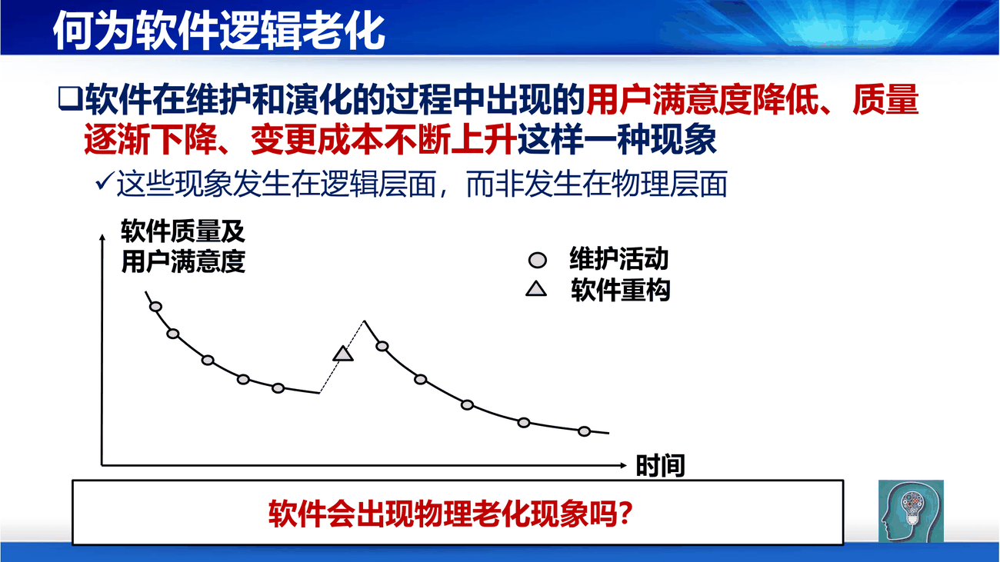
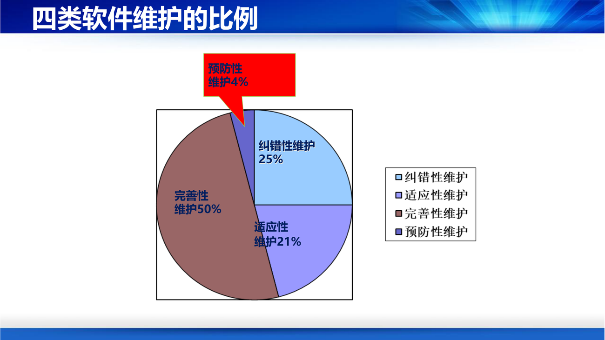

第 10 讲是整门课的收尾，也是最"现实"的一讲：软件交付不是结束，是开始。
课件第 3 页先问了一个引子：物理设备在使用过程中会出现故障，需要维护。软件是否也会出故障？为什么？出了故障怎么办？
答案在"软件逻辑老化"这个定义里（PPT 第 4 页）：
软件在维护和演化的过程中出现的用户满意度降低、质量逐渐下降、变更成本不断上升这样一种现象。这些现象发生在逻辑层面，而非物理层面。
课件配了一张曲线图：随着维护活动的进行，软件质量与用户满意度逐渐下滑，而软件重构能让曲线重新抬升——所以老化不是不可逆的，但要靠主动干预。
补这一条和第 1 讲"软件不会磨损和老化"看似矛盾，其实是一体两面：软件不会物理老化（没有材料疲劳、不会生锈），但会逻辑老化（结构越来越乱、文档越来越不匹配、每次改动都要绕更多弯）。判断依据：如果一个系统的"改一个功能需要动五个模块、开三次会"，它就已经在老化了。

课件给了两个层次的表述。
通俗版（PPT 第 5 页）：软件在交付使用后，由于应用需求和环境变化以及自身问题，对软件系统进行改造和调整的过程。三种触发原因：
课件用"小米便签"举例：设置/解除便签访问密码、根据密码访问便签、改善程序代码质量。
严格版（PPT 第 6 页）：
指软件系统交付使用以后、新版本升级之前这段时间里，为了改正错误或满足新的需求而修改软件的过程。
目标是三件事：提高软件的可维护性、减少维护所需工作量、降低软件系统的总成本。
补注意"交付使用以后、新版本升级之前"这个时间限定——它把维护和"开发新版本"区分开了。实际工程中两者界限模糊（持续交付让"版本"变得连续），但概念上必须分清：维护是在既有架构内做修改，新版本可以重构架构。这个区分在第 10 讲后面讲"再工程"时会用到。
课件第 7–11 页用四个"为什么"引出四类维护，这个结构很好记：
引子："为什么软件在使用时还有缺陷存在？"
定义：对在测试阶段未能发现的、在软件投入使用后才逐渐暴露出来的错误的测试、诊断、定位、纠错，以及验证、修改的回归测试过程。
补为什么测试过了还有缺陷？ 第 9 讲讲了两大挑战：不能穷举、成本有限。所以测试只能"降低缺陷密度"，不能"清零"。纠正性维护就是为这个差额买单。
引子："为什么软件需要适应环境的变化？"
定义：由于新的硬件设备不断推出、操作系统和编译系统不断升级，为了使软件能适应新的环境而引起的程序修改和扩充活动。
补这类维护在现代占比在上升：浏览器版本、JDK 升级、云平台 API 变更、第三方 SDK 停服……很多"技术债"其实是环境债——代码没变，世界变了（想想第 9 讲波音 737 MAX 那个 ±100/±300 的例子，本质也是"环境变了但假设没变"）。
引子："小米便签维护中是否涉及完善性维护？做了哪些完善性工作？"
定义：在软件使用过程中，用户往往会对软件提出新的功能与性能要求。为满足这些要求，需要修改或再开发软件，以扩充功能、增强性能、改进加工效率、提高可维护性。
补注意定义里包含了"提高可维护性"——所以"重构"也属于完善性维护（而不是预防性维护）。这是易错点，见下一节。
引子："小米便签需要做预防性维护吗？"
定义：为了进一步改善软件的可靠性和易维护性，或者为将来的维护奠定更好的基础而对软件进行修改。课件加了一句实话："这类维护很难。"
补完善性维护 vs 预防性维护的分界线：完善性维护是"现在要它更好用/更快"（用户提出或能感知），预防性维护是"将来要它更好改"（用户感知不到，纯粹为降低未来成本）。所以"给代码加注释、拆大类、补测试用例"属于预防性维护，"加一个新功能、优化查询速度"属于完善性维护。
课件第 12 页给了一个饼图，这组数字必须记：
| 类型 | 比例 |
|---|---|
| 完善性维护 | 50% |
| 纠错性维护 | 25% |
| 适应性维护 | 21% |
| 预防性维护 | 4% |

补这组数字有一个反直觉的结论：维护工作的主体不是"修 bug"（25%），而是"加功能/改功能"（50%）。所以"维护 = 修补"是个误解——它更像"在既有系统上继续开发"。这也解释了为什么维护那么难：它要求维护者在别人设计的结构里做开发，比从零开发多一层理解成本。
补4% 的预防性维护是最值得反思的数字：它收益最长远（降低未来所有维护的成本），占比却最低，因为它"看不到即时产出"，最容易被进度压力挤掉。这是典型的技术债成因。
这五题是检验"四种维护"是否真懂的最好材料：
| 情形 | 答案 | 理由 |
|---|---|---|
| 微软的操作系统补丁 | 纠错性 | 修的是已暴露的缺陷/漏洞 |
| 某政府发现数据库容量日益增大，原有 ACCESS 小型报表系统不能满足要求，需把数据库移植到 SQL Server | 适应性 | 因环境/平台（容量、DBMS）变化而迁移，功能未变 |
| QQ 的版本升级 | 完善性 | 一般是为增加新功能、改进体验 |
| 杀毒软件病毒库的更新 | 完善性 | 扩充"能识别的病毒"这一功能范围（也可辩为适应性，但课件答案按完善性） |
| Delphi 原来运行在 Windows 下，现在要开发可运行在 Unix 下的新版本 | 适应性 | 目标运行环境变了 |
补判别口诀：问三个问题——改的是"错"还是"环境"还是"功能"还是"结构"？ 错 → 纠错；环境（OS/硬件/DB/第三方）→ 适应；功能与性能 → 完善；结构（为将来好改）→ 预防。最容易混的是"杀毒软件病毒库"：它的边界确实模糊（病毒库是新数据，也可视为适应新威胁），课件归为完善性，考试按课件的口径答。
课件第 13 页，这四条解释了"为什么维护是个大坑"：
| 特点 | 内容 |
|---|---|
| 同步性 | 维护需要与软件使用同步进行（不能停机慢慢改） |
| 周期长 | 一些软件会服役十几年甚至几十年 |
| 费用高 | 维护成本高达总成本 80% 以上，维护费用是开发费用的 3 倍以上 |
| 难度大 | 要充分理解待维护软件的架构、设计和代码，极困难；尤其在设计文档缺失时；50%–90% 的时间被消耗在理解程序上 |
补"50%–90% 的时间花在理解上"这个数字是全讲最有力的一句。它意味着：维护工程师的大部分工资，是在为"当年没写清楚的文档和没写明白的代码"付账。 这也是为什么第 8 讲讲"程序设计风格"、第 2 讲讲"文档的四个作用"，最终都要在这里兑现。
课件第 14 页给了一张"原因 → 结果"的表，逻辑链非常清楚：
| # | 原因 | 结果 |
|---|---|---|
| 1 | 理解别人写的程序通常非常困难，没有说明文档就更困难 | 所以软件工程强调文档，编码阶段强调提高代码可读性 |
| 2 | 可能修改了代码，详细设计书没有修改 | 文档可能和代码不完全一致 |
| 3 | "先实现功能再说"，没有精力或能力考虑将来的修改 | 大多数软件在设计时没有考虑将来的修改 |
| 4 | 上述原因造成代码看不懂、不知如何改；尤其对未参与原项目开发的人员，根本不了解来龙去脉，也没时间仔细研究 | 维护工作经常遭受挫折；改代码时发现牵扯太多、这也不能改那也不能动 |
规模数据（PPT 第 15 页）给了一个"复杂到无法有效维护"的量级感：Android 1200 万行，Win 7 3000 万行，被长期诟病臃肿的 Vista 5000 万行，美国"全民健保"网站（Obamacare）5 亿行——是 Windows + Office 的五倍还多，而且"并不是交给有大型项目经验的公司来做，而是包给一些小公司"。
补这个案例的教训不是"代码多就一定烂"，而是：规模 + 缺乏经验的组织 = 无法维护。同样是几千万行，有成熟工程体系的公司能维护，没有的就不能。规模本身不致命，"规模超过了组织能力"才致命。
课件第 16 页用了很好的类比："修改代码引入了潜伏的 Bug，降低软件质量。这与吃药治病一样，'是药三分毒'。"
| # | 维护的方式 | 副作用 |
|---|---|---|
| 1 | 修改编码 | 使编码更加混乱、程序结构更不清晰、可读性更差，而且有连锁反应 |
| 2 | 修改数据结构 | 数据结构是系统的骨架，改它是对系统"伤筋动骨的大手术"，在数据冗余与数据不一致方面可能顾此失彼 |
| 3 | 修改用户数据 | 需要与用户协商，一旦疏忽可使系统发生意外 |
| 4 | 修改文档 | 对非结构化维护不适应；对结构化维护要严防程序与文档的不匹配 |
补这四条的风险是从上到下递增的：改代码风险最小（改错了能回滚），改数据结构风险巨大（要迁移历史数据、要停服、可能丢数据），改用户数据风险最大（不可逆）。所以工程上的原则是：能改代码就不要改结构，能加字段就不要改字段类型，能不动用户数据就绝不动。